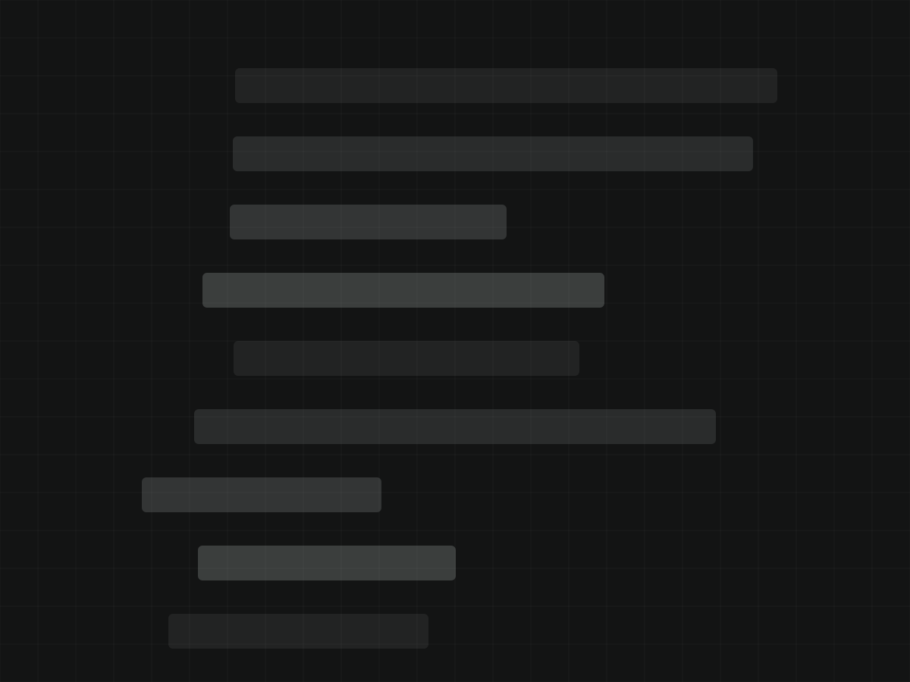

Rick Howell has been restoring agricultural and residential concrete out of Boscobel since 1991, alongside Northeast Silo Manufacturing Co. Structures that still have decades left in them, brought back instead of torn down.
Get a structure looked atAgricultural first, residential and commercial alongside it. Repair and restoration rather than pour-and-leave.
Stave and poured silos resurfaced, re-hooped and sealed. The alternative to writing off a structure that is still structurally worth saving.
Feed bunk walls, pit walls, freestall and parlour concrete — the surfaces that take manure, salt and equipment abuse year round.
Cracked, bowed and spalling residential foundation walls repaired rather than replaced where the wall will take it.
Worn surfaces rebuilt to profile and sealed, so the freeze-thaw cycle stops taking a layer off every spring.
Spall repair, rebar treatment and rebuild on walls and columns that have lost section.
Through Northeast Silo Manufacturing Co., the same yard that has been building silos in Boscobel for decades.
Agricultural concrete is its own trade. Most general concrete contractors have never touched a silo.



This is where your job photos go. A dozen before-and-after shots of a silo or a bunk wall would do more selling here than any paragraph — this is a trade where the photo is the proof.
Based at 611 Superior St in Boscobel, working southwest Wisconsin.
Often, yes. If the staves and the base are sound, resurfacing and re-hooping costs a fraction of replacement and puts the structure back in service for years.
Yes. Cracked, bowed and spalling basement walls, repaired where the wall will take a repair and called honestly when it will not.
Southwest Wisconsin as a matter of course — Grant, Crawford, Richland, Iowa and Lafayette counties, further for larger jobs.
Concrete restoration is weather-dependent, so the calendar fills from spring out. A structure identified in fall gets a better slot than one identified in June.
Through Northeast Silo Manufacturing Co., the sister operation in the same Boscobel yard.
Call and describe it. Most jobs need eyes on the structure before a number means anything.
Concrete that is failing does not wait for a better season.
Call and describe the structure — Rick will tell you straight whether it is worth saving.
(608) 375-4888Wisconsin Concrete Restoration · Boscobel, Wisconsin
Hi — Wisconsin Concrete Restoration in Boscobel. Silos, barn walls, basements. What are we looking at?